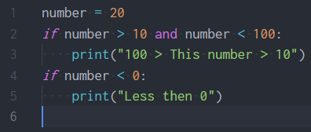
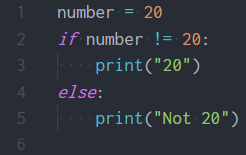
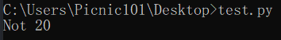
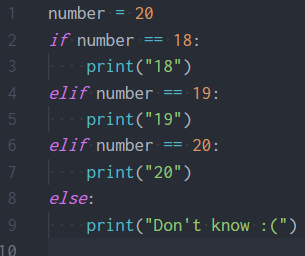
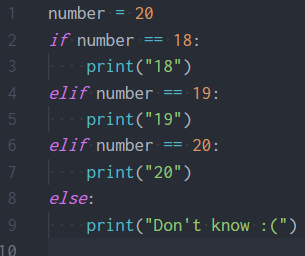

Boolean & Condition
ค่าความจริงในภาษา Python มีแค่ True และ False เท่านั้นเองครับ ซึ่งจริงๆแล้วข้อมูลประเภทอื่นก็เป็นค่าความจริงเหมือนกันโดย
- ค่าความจริงที่ไม่ใช่ 0 หรือ String เปล่า จะมีค่าเป็น True
- ค่าความจริงที่เป็น 0 หรือ String เปล่า จะมีค่าเป็น False
เราสามารถเช็คได้จาก การใช้ Build in function ที่ชื่อว่า bool() ครับ ยกตัวอย่างเช่น
| เรียกใช้ | ผลลัพธ์ |
|---|---|
| bool(1) | True |
| bool(0.01) | True |
| bool(-1) | True |
| bool(-55) | True |
| bool("Hello") | True |
| bool(" ") | True |
| bool(0) | False |
| bool("") | False |
| bool(0.00) | False |
| bool(-0) | False |
ต่อไปเรามาดูสิ่งที่เรียกว่า Relational Operators กันครับ ซึ่งจะมีไว้สําหรับเปรียบเทียบค่าของ 2 สิ่งครับ ซึ่งจะมีทั้งหมด 6 อันดังนี้เลย
| Relational Operators | หน้าที่ |
|---|---|
| เครื่องหมาย = (เท่ากับ) | ทําการเปรียบเทียบว่าเท่ากันหรือไม่ |
| เครื่องหมาย != (ไม่เท่ากับ) | ทําการเปรียบเทียบว่าไม่เท่ากันหรือไม่ |
| เครื่องหมาย > (มากกว่า) | ทําการเปรียบเทียบว่าด้านซ้ายมากกว่าด้านขวาหรือไม่ |
| เครื่องหมาย < (น้อยกว่า) | ทําการเปรียบเทียบว่าด้านซ้ายน้อยกว่าด้านขวาหรือไม่ |
| เครื่องหมาย >= (มากกว่าหรือเท่ากับ) | ทําการเปรียบเทียบว่าด้านซ้ายมากกว่าหรือเท่ากับด้านขวาหรือไม่ |
| เครื่องหมาย <= (น้อยกว่าหรือเท่ากับ) | ทําการเปรียบเทียบว่าด้านซ้ายน้อยกว่าหรือเท่ากับด้านขวาหรือไม่ |
มองดูแล้วอาจจะยังงงอยู่ลองมาดูตัวอย่างกันเลยครับ


ต่อไปเรามาดูสิ่งที่เรียกว่า Logical Operator กันครับ
-
and จะให้ค่าเป็น True ก็ต่อเมื่อเป็นด้านซ้ายและขวาเป็น True กับ True เท่านั้น
ด้านซ้าย ด้านขวา ผลลัพธ์ False False False False True False True False False True True True -
or จะให้ค่าเป็น True ก็ต่อเมื่อเป็นด้านซ้ายหรือด้านขวาเป็น True
ด้านซ้าย ด้านขวา ผลลัพธ์ False False False False True True True False True True True True -
not จะให้ค่าตรงข้าม
ค่าความจริง ผลลัพธ์ False True True False -
in & not in สามารถใช้ได้กับ String, List, Tuple, set, etc.
- a in b >> จะเป็นการเช็คว่ามี a ใน b ไหม ถ้ามีก็ให้ค่าความจริงเป็น True ถ้าไม่ใช่เป็น False
- a not in b >> จะเป็นการเช็คว่า a ไม่ได้อยู่ใน b ใช่ไหม ถ้าใช่ก็ให้ค่าความจริงเป็น True ถ้าไม่ใช่เป็น False
เรามาดูตัวอย่างจากการใช้ Relational Operators ร่วมกับ Logical Operators กันครับ


หลังจากที่เราเรียนรู้ในเรื่องของ Boolean ไปแล้วเราสามารถนําเจ้าพวก Boolean เนี่ยมากําหนดเงื่อนไขให้กับโปรแกรมของเราได้ครับ เช่น ถ้าตัวแปร a มีค่า > 10 ให้แสดงคําว่า "More than 10" ถ้าไม่ใช่ ให้แสดงคําว่า "Less Than 10"
โดยเราสามารถทําได้โดยใช้สิ่งที่เรียกว่า Condition ครับ (If & else นั้นแหละ) ซึ่งจะมี Syntax ตามนี้เลยครับ

โดย if จะทํางานโค้ดที่อยู่ภายในก็ต่อเมื่อเงื่อนไข (boolean expression) เป็นจริงครับ ยกตัวอย่างเช่น

เรามาดูสิ่งที่มาคู่กันกับ if กันครับ นั้นก็คือ else นั้นเอง ถามว่ามันคืออะไร else จะเป็นตัวบอกโค้ดที่จะถูกรันถ้าเงื่อนไข if ไม่เป็นจริงนั้นเองครับ ยกตัวอย่างเช่น
 มี if else แล้วก็ต้องมี elif (else if) ครับ elif จะเป็นตัวบอกโค้ดที่จะถูกรันถ้าเงื่อนไขข้างบนไม่เป็นจริงแต่เงื่อนไขของมันเป็นจริงครับ เรามาลองดูโค้ดตัวอย่างนี้กันครับ
 

ถ้าเราสังเกตเนี่ยการเขียนแบบที่ 1 เนี่ยทําให้เกิดสิ่งที่เรียกว่า nested condition ครับหรือก็คือ เงื่อนไขในเงื่อนไขลองคิดภาพถ้าเรามีเงื่อนไขเป็นร้อยๆแล้วมันซ้อนกันเป็นขั้นบรรไดแบบนี้สิครับ นรกชัดๆ ดังนั้นถ้าหากเราใช้ elif เนี่ยจะช่วยให้โค้ดของเราเนี่ยมีความสวยงามและเข้าใจง่ายมากขึ้นกว่าเดิมเยอะเลยครับ
เรามาดูตัวอย่างการใช้ Condition กันอีกสักรอบครับ ตามนี้เลย


ข้อควรระวัง : เราไม่สามารถที่จะใช้ else หรือ elif ก่อน if ได้นะครับ